ノートパソコン（1280×720）では、見出しの行が画面より広く（約1500px）、「この年度を学生に公開」が右に隠れて、下に横の棒が出ます。1440×900 でも「保存していない変更があります」が出ると切れます。1つ選んでください。
画面は本物の管理ページ（準備中の2027年度・保存していない変更あり）に、案の部分だけ書き足して写したものです。
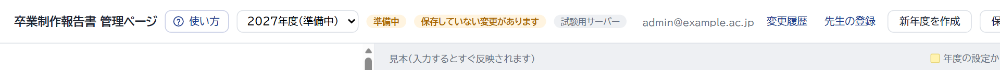
1280×720：「保存」が途中で切れ、「この年度を学生に公開」は画面の外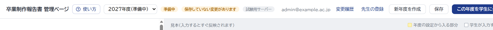
1440×900：「この年度を学生に公開」が途中で切れる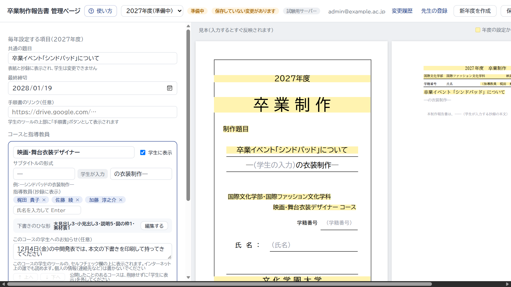
1280×720 の画面全体：いちばん下に横の棒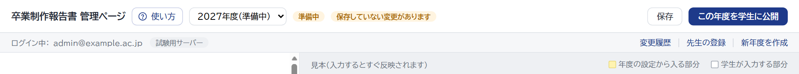
1280×720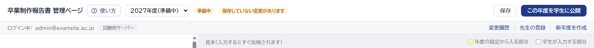
1440×900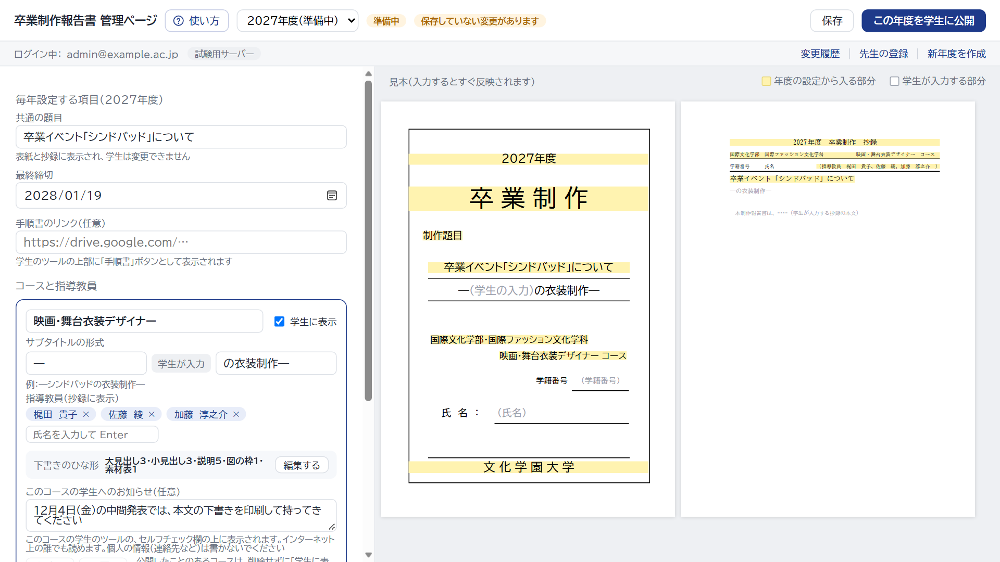
1280×720 の画面全体（横の棒は出ない）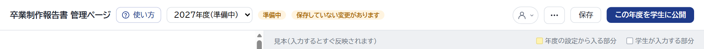
1280×720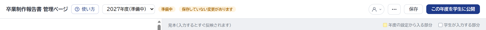
1440×900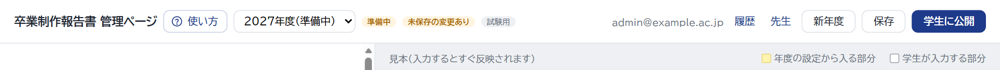
1280×720：ぎりぎり入る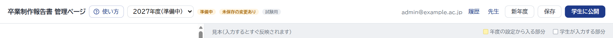
1440×900間違えて作った年度を消せるようにします（サーバーには、もう用意があります）。消せるのは、一度も学生に公開していない「準備中」の年度だけで、管理者だけが使えます。どこに置くか、1つ選んでください。
画面は、試験用サーバーで2027年度（準備中）を作ったところです。見出しは①の案A（2段）の形で描いています。
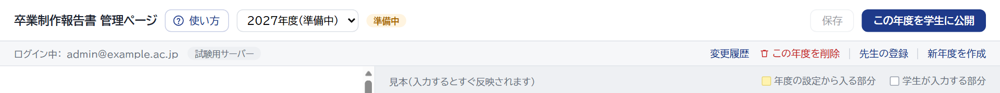
下の段の右（「変更履歴」と同じ、この年度についてのリンク）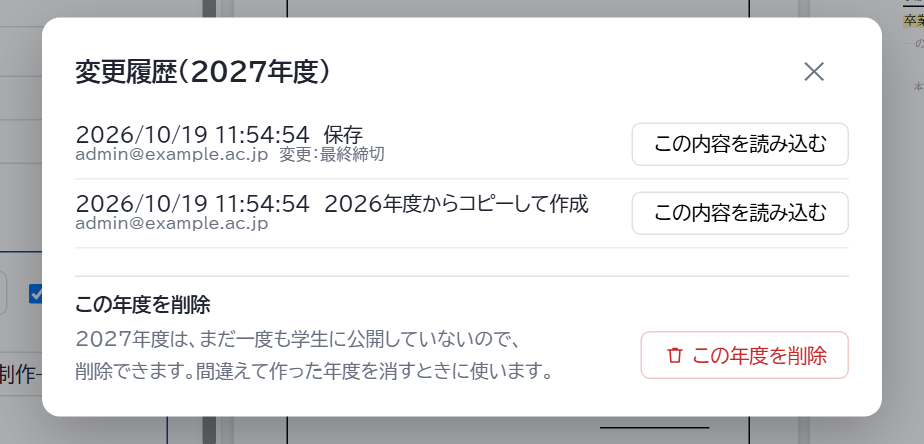
「変更履歴」を押したところ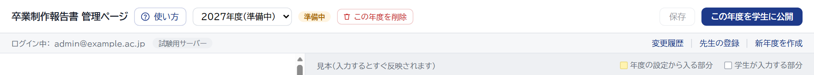
上の段の左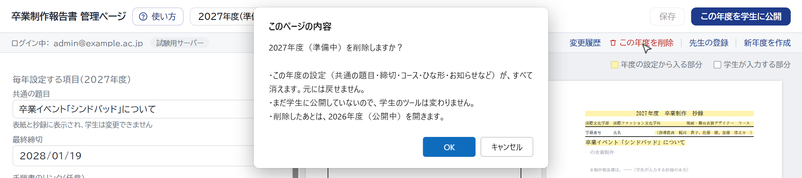
押したときの確かめ（ブラウザの窓。似せて描いたもの）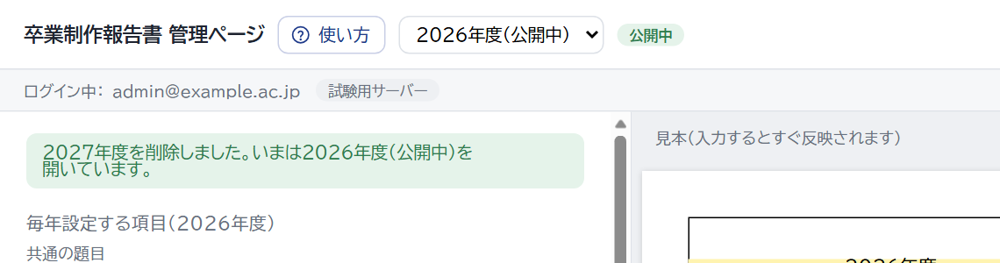
「OK」のあと：公開中の年度に戻り、知らせを出す「新年度を作成」のあとに出る緑の知らせ（前の年度のままの項目）が、長い1つの文で読みにくいです。1つ選んでください。
文は、試験用サーバーで本当に作ったときに出たものです（2026年度のコースにお知らせを入れた状態）。
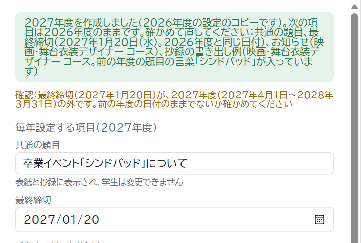
項目が「、」でつながった1つの文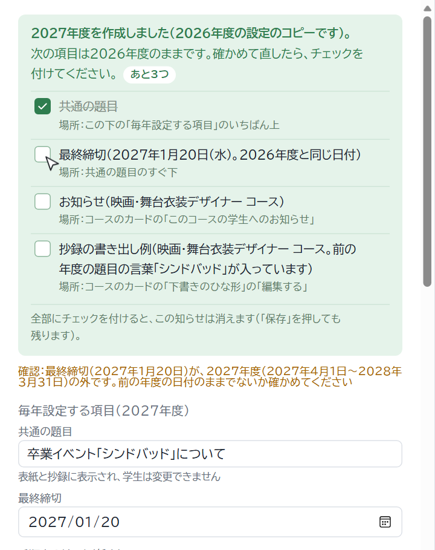
1つ目にチェックを付けたところ説明が長すぎる・見出しが空など、直すところがあると「反映する」が押せません。いまは理由が、左の欄のいちばん下（画面の外のことが多い）の赤い字と、マウスを重ねたときの小さな説明だけです。1つ選んでください。
画面は、3行目の説明を400字にし、7行目の小見出しを空にしたところです（1280×720）。
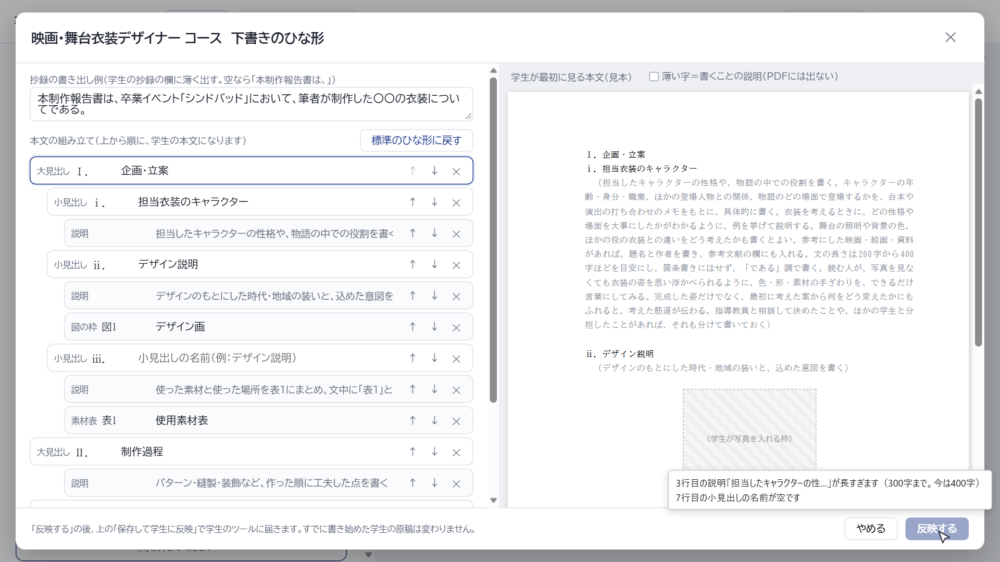
「反映する」にマウスを重ねたときだけ、小さな説明（似せて描いたもの）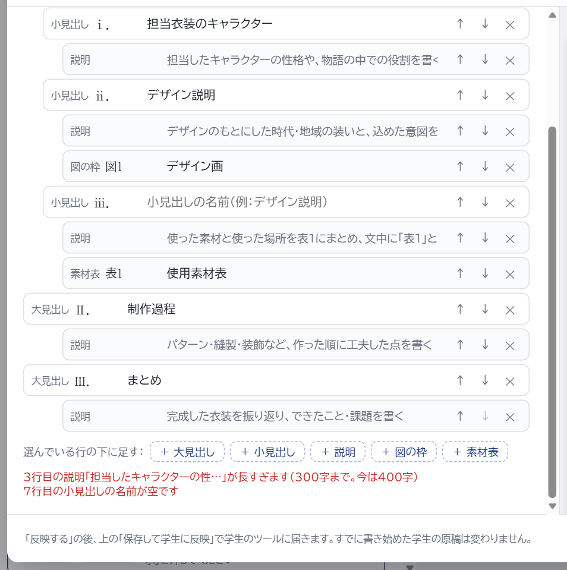
赤い字は、左の欄をいちばん下まで動かすと見える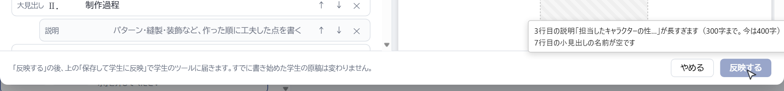
窓のいちばん下（大きく）：ボタンは薄い色になるだけ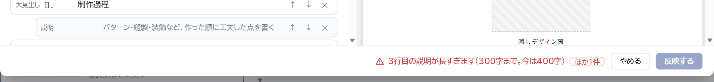
窓のいちばん下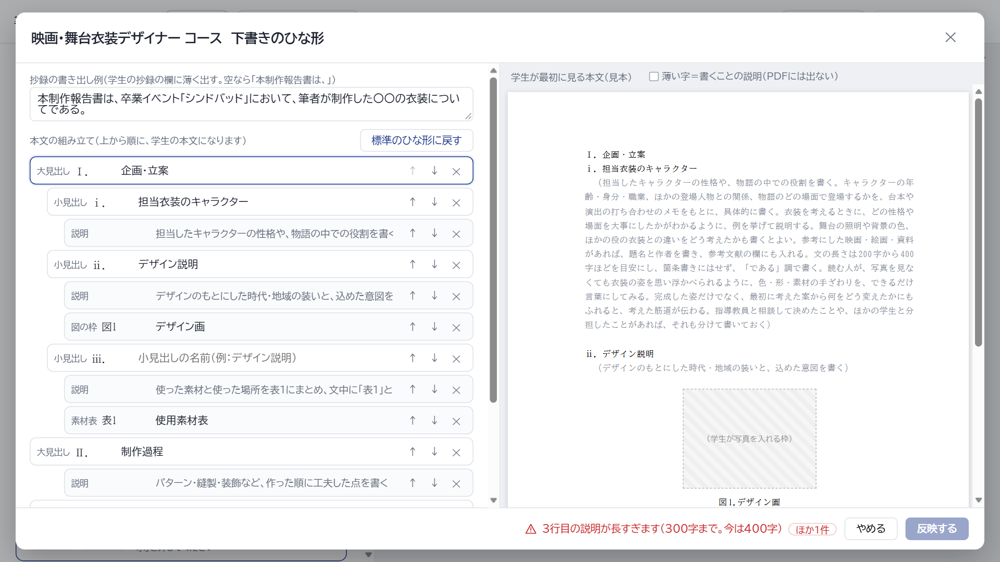
窓の全体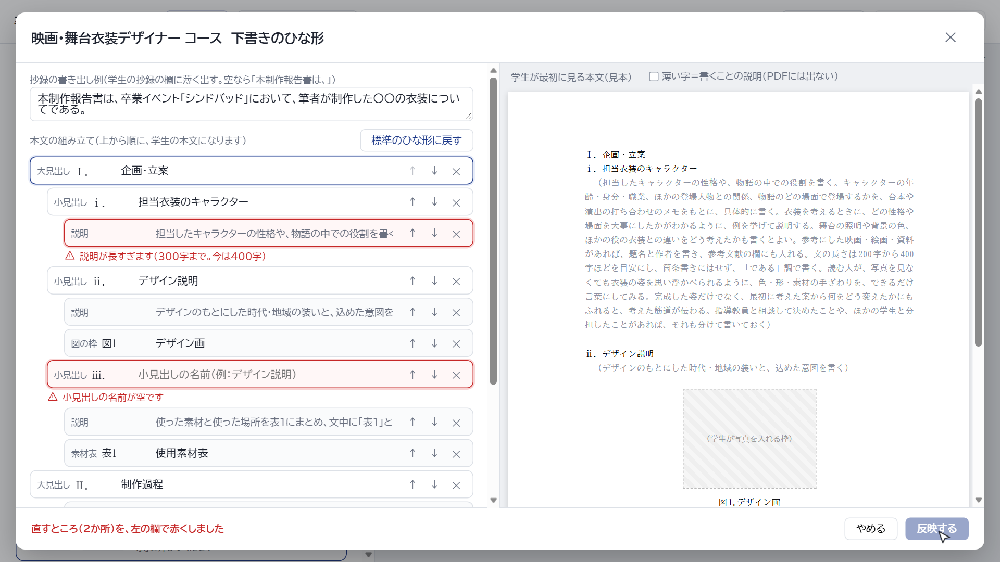
押したところ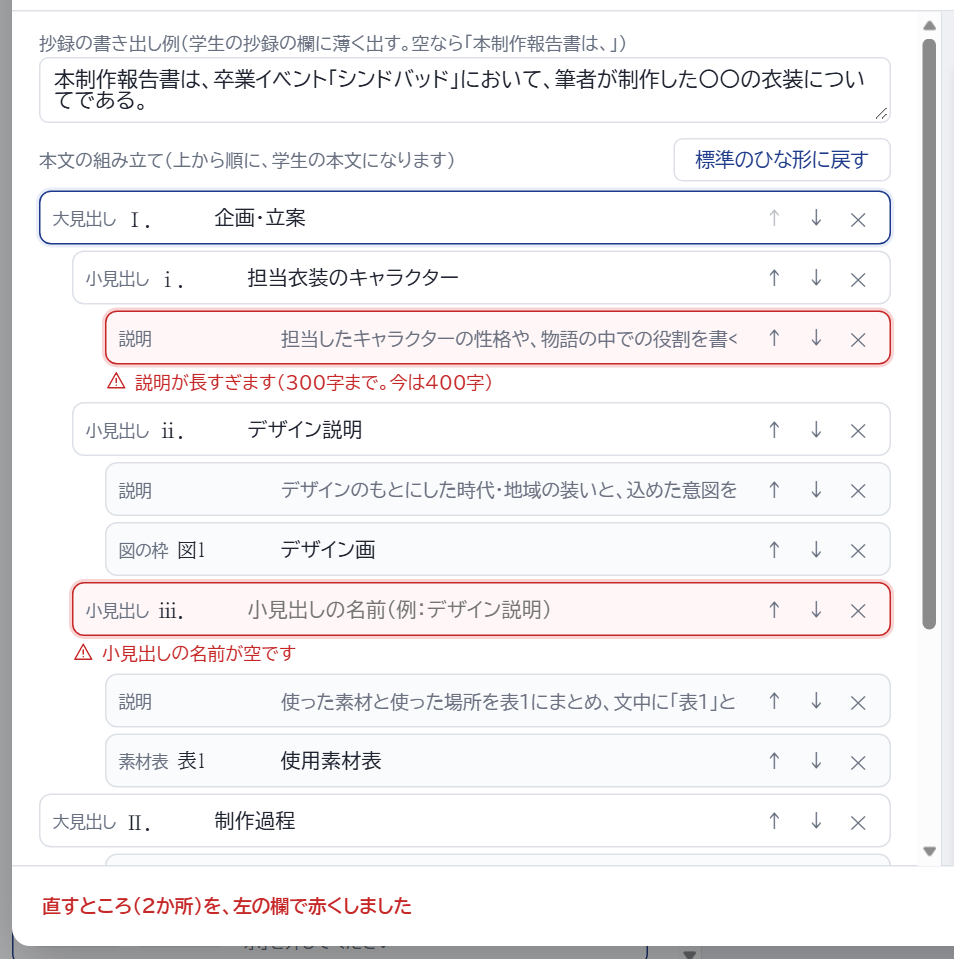
左の欄（大きく）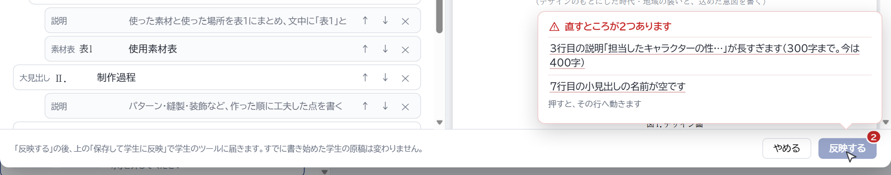
押したところ（窓のいちばん下）